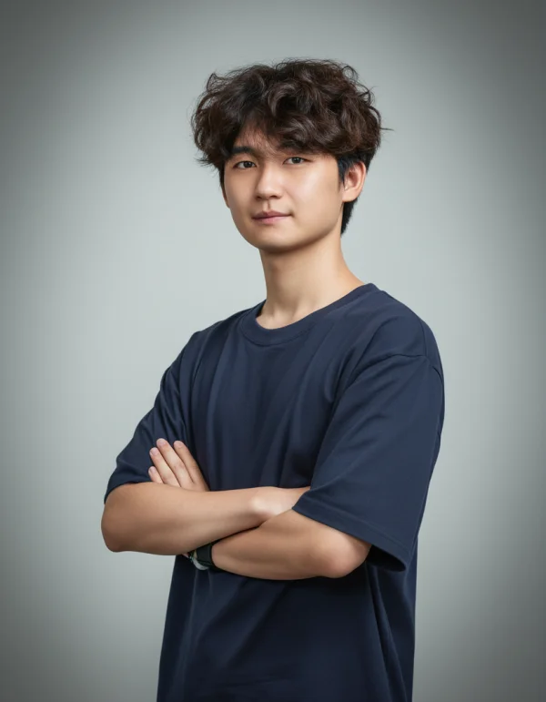
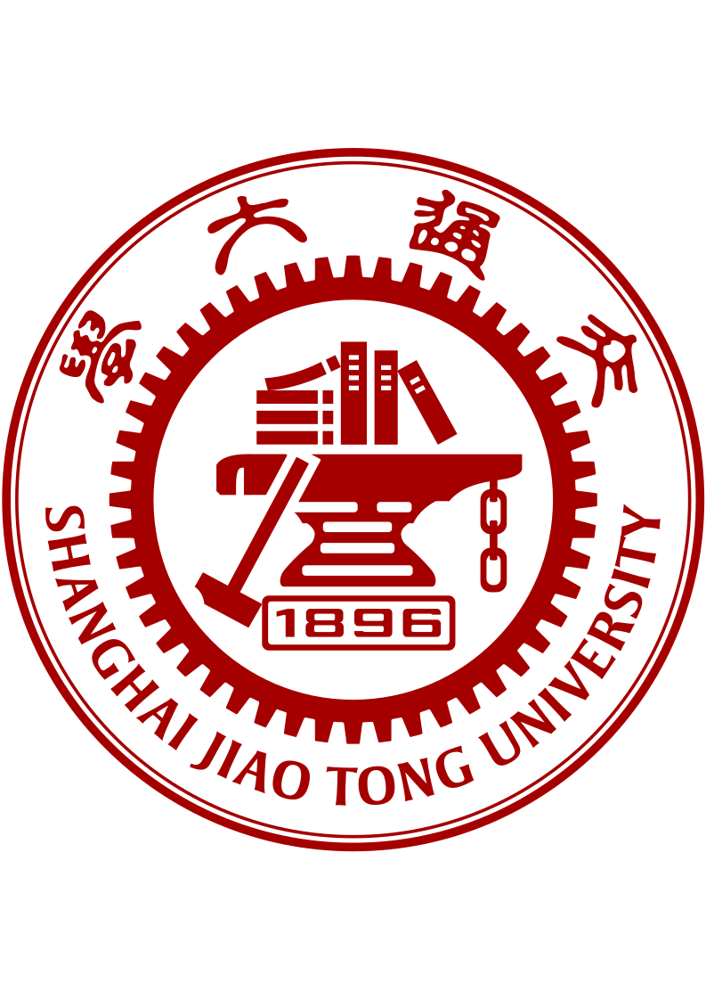

01 · underactuated grippers
Peaucellier linkages, idle-stroke mechanisms, and adaptive grasping strategies for dexterous manipulation with minimal actuators.

Hi!
===========
Undergraduate researcher in robotics
I am Haokai Ding, an undergraduate researcher at Shenzhen Technology University and an X Scholar in the joint training program with Tsinghua University and Shenzhen X-Institute. I will join MBZUAI as an incoming MSc student in Robotics.
I previously worked with Prof. Wenzeng Zhang and am currently working with Prof. Xingxing Zuo on aerial manipulation.
I am drawn to robotics because mechanism is where intelligence becomes physical. My work asks how few actuators and well-designed linkages — Peaucellier-based, idle-stroke, and other underactuated structures — can replace many degrees of freedom while preserving dexterous pinching and adaptive grasping. Looking forward, I want to extend these ideas into aerial manipulation, asking how much intelligent behavior can be encoded into the body itself before the controller has to do the work.
===================
Peaucellier linkages, idle-stroke mechanisms, and adaptive grasping strategies for dexterous manipulation with minimal actuators.
UAV perching mechanisms with electromagnetic adhesion systems for stable attachment and manipulation on varied surfaces.
An underactuated gripper that integrates an optimized Peaucellier linkage with idle-stroke transmission, achieving linear parallel pinching and shape-adaptive enveloping under a single motor.
A grasp-and-lift hand that embeds phase switching directly into a lost-motion transmission, separating force-free alignment from force-transmitting lifting and offloading control burden onto the mechanism.
Ongoing visiting work with Prof. Wei Dong on UAV perching and contact-rich aerial manipulation, exploring how mechanism-level designs translate to flying platforms.
MSc in Robotics (Incoming)
X Scholar in a joint training program focused on underactuated robotic grippers and linkage design.
B.Eng. in Electronic Science and Technology, Future Technology School

Visiting student with Prof. Wei Dong on UAV perching and aerial manipulation; developing controllers and mechanism designs for contact-rich UAV tasks.